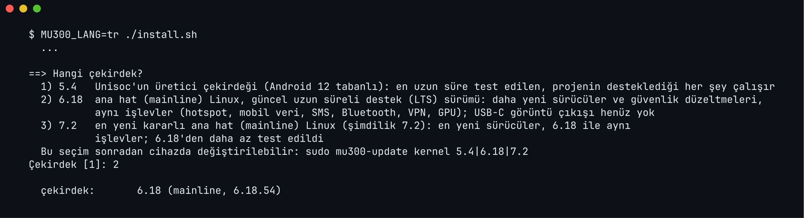

F50 ya da U30 Air'inize Linux kurun
Dört adım, yaklaşık 15 dakika. Kurulum programının sorduğu her soru aşağıda, emin olmadığınızda vereceğiniz cevapla birlikte açıklanıyor.
Yedek
Cihazınızın yerine konamayan kendi verilerini bilgisayarınıza kopyalayın. Önerilir.
Kontrol
--checkcihazı okur ve Linux'un nereye sığdığını söyler. Hiçbir şey yazmaz.Kurulum
Birkaç soruyu yanıtlayın, özeti okuyun,
INSTALLyazın.Giriş
Yaklaşık bir dakika sonra USB üzerinden: SSH ya da web tarayıcısı.
Başlamadan önce
Tek cümleyle: cihaz zaten root'lu olmalı ve bilgisayarınız onunla adb üzerinden
konuşabilmeli. Tam liste şöyle.
Cihaz
- Bir ZTE F50 / MU300 ya da ZTE U30 Air (U30 Pro değil).
- Root'lu ve kilidi açık: değiştirilmiş bir Android açılış imajıyla zaten açılabiliyor olmalı. Oraya getirmek bu projenin parçası değildir; o araçların kendi talimatlarıyla, kendi sorumluluğunuzda yaparsınız.
- USB hata ayıklama açık ve cihaz bilgisayarınıza USB ile bağlı.
Bilgisayarınız
| Bilgisayar | Gerekenler | Kurulum programını nasıl çalıştırırsınız |
|---|---|---|
| macOS | adb, Python 3, lz4 ve curl (genellikle zaten vardır) | Terminal'de ./install.sh |
| Linux | adb, Python 3, lz4 ve curl | bir terminalde ./install.sh |
| Windows 10/11 | adb ve PowerShell. Python 3 ve lz4 modülü eksikse kurulum programı onları kendisi kurar. | PowerShell'de .\install.ps1 ya da cmd'de install.cmd (yürütme ilkesini değiştirmek gerekmez) |
adb, Android'in platform araçlarıyla (platform-tools) gelir. Windows'ta kurulum programı, projenin
yanına, İndirilenler'e ya da masaüstüne açılmış bir platform-tools klasörünü PATH'te olmasa da bulur.
Projeyi alın
git ile klonlayın ya da GitHub'dan indirin (yeşil "Code" düğmesi, ardından "Download ZIP") ve açın. Her iki durumda da kurulum programı başlarken kendini GitHub'la günceller.
git clone https://github.com/dikeckaan/mu300-linux
cd mu300-linuxSonra bilgisayarın root'lu cihazı gördüğünden emin olun:
adb devices # cihazınız "device" olarak listelenmeli
adb shell su -c id # uid=0(root) yazmalıİlk seferde cihaz bu bilgisayardan USB hata ayıklamaya izin verilsin mi diye sorar, Magisk de kabuğa root izni isteyebilir: ikisine de izin verin.
Kurulum bir açılış bölümüne (boot_b; Android b yuvasından çalışıyorsa, ki bir güncellemeden sonra
sık olur, boot_a) ve misc'in 32 baytına yazar. Yaygın 64 GB cihazda Android, verileri ve
bölüm tablosu hiç değiştirilmez. Yine de yanlış anda bir elektrik kesintisi, kötü bir kablo ya da bir hata, telefon
sınıfı bir cihazı kurtarma aracı gerektirecek hâle getirebilir. Yedek alın ve kaybetmeyi göze alamayacağınız bir
cihaza kurmayın.
Yerine konamayanı yedekleyin
Önerilir. Bu, cihazınızın kendine ait verilerini (prodnv, modem kalibrasyonu ve IMEI bölümleri,
önyükleyici zinciri) bilgisayarınıza kopyalar ve her kopyayı cihazla karşılaştırır.
tools/backup-device.sh # macOS / Linux, cihaz root'lu Android'deKurulum bu bölümlere hiç dokunmaz, ama bir gün kaybolurlarsa hiçbir yazılım indirmesi onları geri getiremez ve modem bozuk kalır. Klasörü güvenli bir yerde ve her türlü deponun dışında tutun: içinde IMEI'niz var. Betik macOS ve Linux'ta çalışır.
Cihazınızı kontrol edin
Bu yalnızca okur; hiçbir şey yazmaz.
MU300_LANG=tr ./install.sh --check # macOS / Linux
.\install.ps1 -Check -Lang tr # Windows (PowerShell)
install.cmd -Check -Lang tr # Windows (cmd)Depolama boyutunu, Android'in bölümlerinin nerede bittiğini ve arkalarında ne kadar boş alan olduğunu yazar.
Önemli olan, sonuç: ile başlayan son satırdır:
| Şunu yazıyorsa | Anlamı |
|---|---|
TAMAM: boş ve kullanılmıyor, test edilen cihazla aynı düzen (64 GB eMMC'de userdata'dan sonra ~32 GiB) | Yaygın 64 GB cihaz. 2. adıma geçin. |
TAMAM: ... ama yalnızca bir sisteme yer var ya da OpenWrt sığar, Ubuntu sığmaz | Daha küçük bir boş alan. Sığanı kurun ya da SD kart kullanın (F50). |
eMMC'de Linux için yeterli boş alan yok; yükleyici bunun yerine SD kartı önerecek | Yuvada bir kart var; kurulum programı onu önerir ve hiçbir şey yeniden bölümlenmez. |
TAMAM: zaten bir MU300 Linux kurulumu var | Linux zaten kurulu: kurulum programı update ya da wipe seçeneği sunar. |
UYARI: bölümlenmemiş alan boş değil | Boş alana bir şey yazılmış. Kurulum onun üzerine yazar; kurulum programı overwrite yazmanızı ister. |
Hiç boş alan yok: 32 GB sürüm
Kontrol hiç yer bulamazsa elinizde 32 GB sürüm vardır; Android'in userdata bölümü bütün diski
doldurur. İki yolunuz var:
SD kart kullanın (F50)
Cihaz kapalıyken yuvaya en az 700 MiB'lık bir kart takın. Kurulum programı onu önerir, biçimlendirir ve dahili depolamada hiçbir şey yeniden bölümlenmez.
userdata'yı küçültün (deneysel)
Kurulum programı userdata'yı
küçülterek yer açabilir. Bu bölüm tablosunu yeniden yazar ve Android'deki her şeyi siler. Önce sorar
ve ERASE yazmanızı ister. Evet demeden önce tools/backup-device.sh ile yedek alın.
Sayılar iki duruma da benzemiyorsa durun ve --check'in yazdıklarıyla bir
issue açın: o sayılar sürümü belirler.
SD kart hakkında (yalnızca F50)
- En az 700 MiB'lık bir kart.
mu300sdetiketiyle ext4 olarak biçimlendirilir. Başka bir Linux (ext4) dosya sistemi taşıyan bir kart asla biçimlendirilmez. - Kartı cihaz kapalıyken takın. Linux çalışırken takılan bir kart ancak bir sonraki yeniden başlatmadan sonra okunur.
- Bir
mu300sdkartı her zaman önce açılır. Kart yokken cihaz, varsa dahili kurulumu başlatır. Hiçbiri yoksa birkaç saniye kart bekler, sonra yaklaşık beş dakika içinde Android'e döner. - Üç çekirdek de kartı okur. U30 Air'de yuva yoktur.
- Cihaz
mu300sdetiketli her kartı başlatır; yani cihaz kimin elindeyse karttan kendi sistemini de başlatabilir.
Kurun
MU300_LANG=tr ./install.sh # macOS / Linux
.\install.ps1 -Lang tr # Windows (PowerShell)
install.cmd -Lang tr # Windows (cmd)Önce dili sorar, projenin kopyasını GitHub'la günceller (yeni bir şey varsa kendini yeniden başlatır) ve cihazı tekrar kontrol eder. Ardından aşağıdaki sorular gelir. Sorulardan sonra:
- en yeni sürümün hazır imajlarını indirir ve sağlama toplamlarını kontrol eder,
- Wi-Fi ve modem dosyalarını sizin kendi cihazınızdan kopyalar (indirilenlerde tescilli dosya yoktur),
- tam olarak ne yazacağını gösterir ve
INSTALLyazmanızı bekler, - sistemleri cihaza kopyalar, Linux açılış imajını yazar ve Linux yuvasını hazırlar,
- Android'e küçük bir Magisk modülü ekler; böylece sonradan bilgisayarsız Android'den Linux'u başlatabilirsiniz,
- cihazı Linux'a yeniden başlatır.

Kurulum programının soruları, tek tek
Gri kutulardaki metin, kurulum programının (Türkçe seçildiğinde) yazdığıdır, kısaltılmıştır. Köşeli parantez
içindeki değer, örneğin [evet], varsayılandır: Enter'a basmak onu seçer. Evet/hayır
sorularına evet/hayır, e/h ya da yes/no
yazabilirsiniz. Bazı sorular yalnızca gerektiğinde çıkar.
Kurulum programının dili: 1 English (varsayılan), 2 Türkçe, 3 中文. MU300_LANG=tr ile başlattıysanız bu soru gelmez.
Türkçe için 2 yazın.
Yalnızca F50'de bir SD kart takılıysa sorulur. internal dahili depolamadaki boş alanı kullanır, sd kartı Linux için biçimlendirir (üzerindeki her şey silinir; onaylamak için ERASE yazarsınız).
Emin değilseniz: 64 GB cihazda internal, 32 GB sürümde sd.
Ubuntu, apt ile tam bir Linux sistemidir (yaklaşık 500 MiB RAM kullanır). OpenWrt, web arayüzlü bir yönlendirici sistemidir (yaklaşık 140 MiB). "İkisi de" ikisini yan yana kurar; sonradan mu300-os ile geçiş yaparsınız.
Emin değilseniz: kontrol ikisinin de sığdığını söylediyse 3, ikisi de (varsayılan). Bkz. sistem seçimi (İngilizce).
OpenWrt seçildiğinde sorulur. Kontrol paneli bir pano, hücresel kilitler, SMS, bir AT terminali ve USB kiplerini ekler.
Emin değilseniz: sinyali ve SMS'leri tarayıcıda görmek istiyorsanız 2; düz OpenWrt için 1 (varsayılan).
İki sistem kurulduğunda: önce hangisi açılsın. Diğeri kurulu kalır.
Ubuntu için Enter'a basın.
24.04 en uzun süre test edilendir, 2029'a kadar desteklenir. 26.04 en yenisidir (burada beta), 2031'e kadar desteklenir ve ana hat bir çekirdek (6.18 ya da 7.2) ister.
Emin değilseniz: 1, 24.04 (varsayılan).
evet: her açılış Linux'a gider; Android yalnızca başarısız açılışlardan sonra ya da siz istediğinizde gelir. hayır: Android varsayılan kalır, Linux'u istediğinizde başlatırsınız.
Evet için Enter'a basın.
Cihaz kendiliğinden Android'e dönmeden önce arka arkaya kaç yarım kalmış açılışa izin verilsin. Bir açılış, yaklaşık bir dakika içinde tamamlanmazsa başarısız sayılır: elektrik gider, pil biter ya da Linux takılır. Yüksek sayı oynak bir kabloyu affeder; düşük sayı sizi Android'e daha çabuk götürür. Bilgisayar yokken geri dönüş yolunuz da budur: açılış sırasında elektriği arka arkaya bu kadar kez kesin.
5 için Enter'a basın. Sonradan mu300-next-boot attempts N ile değişir.
Telefonlarınız Android'in hotspot'unu zaten tanıyor; böylece Linux'un hotspot'una yeni ayar yapmadan katılırlar.
Evet için Enter'a basın.
OpenCL ile hesaplama yapmak için grafik çipi. Her iki durumda da ekran yoktur.
Evet için Enter'a basın; yer kazanmak için hayır deyin.
mu300-linux-vpn'in isteğe bağlı VPN'i. Sonradan cihazda sudo mu300-extra install vpn ile ekleyebilirsiniz.
Emin değilseniz: hayır (ilk kurulumda varsayılan).
Çekirdek, Linux'un donanımla konuşan özüdür. 5.4, Unisoc'un üretici çekirdeğidir ve en uzun süre test edilendir. 6.18, ana hat Linux'un uzun süreli destek sürümüdür; daha yeni sürücüler, aynı işlevler. 7.2 en yenisidir, 6.18'den daha az test edildi.
Emin değilseniz: 1, 5.4 (varsayılan). Ubuntu 26.04, 6.18 ya da 7.2 ister. Sonradan sudo mu300-update kernel 6.18 ile değişir.
Yalnızca Linux zaten kuruluysa sorulur. update sistemleri yeniden kurar ve ayarlarınızı, kullanıcılarınızı, ev dizinlerini, SSH anahtarlarını ve OpenWrt ayarlarını korur. wipe Linux dosya sistemini silip sıfırdan kurar.
Güncelleme için Enter'a basın (güncelle ve sil da kabul edilir).
Giriş yapacağınız şifre; en az 6 karakter, iki kez yazılır. Yazarken ekranda hiçbir şey görünmez.
Hatırlayacağınız bir şifre seçin: 3. adımda gerekecek.
Son durak. Bunun üstünde kurulum programı tam olarak neyi yazacağını gösterir: sistemler, çekirdek, varsayılan açılış ve dokunduğu bölümler. Okuyun. INSTALL dışındaki her şey iptal eder.
Büyük harflerle INSTALL yazın.


Giriş yapın
Yeniden başlatmadan sonra yaklaşık bir dakika bekleyin. Cihaz, bilgisayarınızda USB üzerinden yeni bir ağ
bağdaştırıcısı olarak görünür. Sonra bir terminalde (Windows'ta PowerShell'de ssh hazır gelir):
ssh ubuntu@192.168.77.1 # F50'de Ubuntu
ssh root@192.168.77.1 # F50'de OpenWrt
ssh ubuntu@192.168.78.1 # U30 Air'de UbuntuKurulumda seçtiğiniz şifreyi kullanın. İlk seferde ssh, cihazın anahtarına güvenip güvenmediğinizi
sorar: yes yazın.
| F50 / MU300 | U30 Air | |
|---|---|---|
| USB üzerinden adres | 192.168.77.1 | 192.168.78.1 |
| Ubuntu | ssh ubuntu@192.168.77.1 | ssh ubuntu@192.168.78.1 |
| OpenWrt | ssh root@192.168.77.1 ya da tarayıcıda http://192.168.77.1 | ssh root@192.168.78.1 ya da http://192.168.78.1 |
İki adres farklıdır; böylece bir F50 ile bir U30 Air aynı anda tek bilgisayara takılabilir.
Cihazın yaydığı Wi-Fi ağı onun hotspot'udur: başka bir seçim yapmadıysanız adı ve şifresi Android'den kopyalanmıştır.
macOS, ekran kilitliyken daha önce hiç görmediği bir ağ arayüzünü kurmaz. Cihazı ilk kez taktığınızda (ya da USB adreslerini değiştiren bir güncellemeden sonra) Mac'in kilidini açın; arayüz belirir.
Ağ hiç gelmezse aynı kablo üzerinden ağ olmadan da çalışan bir seri konsol vardır:
screen /dev/cu.usbmodem* 115200 # macOSKurulumdan sonra
sudo mu300-toolkit # her şey için bir menü
sudo mobile-data status # 5G/LTE bağlantısı açık mı?
sudo mu300-update check # daha yeni bir sürüm var mı?mu300-toolkit, raspi-config benzeri bir menüdür: sıcaklıklar, CPU ve RAM kullanımı, ağ
hızları, performans profilleri, Wi-Fi, VPN ve yazılım güncellemeleri. Doğrudan komutlar
özellikler sayfasında (İngilizce); güncelleme, geri alma ve Android'e gidip gelme
güncelleme ve güvenlik sayfasında (İngilizce) anlatılıyor.
Önceden ayarlayarak atlayabileceğiniz seçimler
| Ayar | Ne yapar |
|---|---|
MU300_LANG=tr ./install.sh, .\install.ps1 -Lang tr | dil sorusunu atlar (en, tr, zh) |
MU300_STORAGE=sd ya da internal | dahili depolama mı SD kart mı sorusunu yanıtlar |
MU300_OPENWRT=plain ya da luci | "Hangi OpenWrt?" sorusunu yanıtlar |
MU300_NO_SELF_UPDATE=1, -NoSelfUpdate | önce projeyi GitHub'dan güncellemez |
MU300_FETCH_JOBS, MU300_RELEASE_URL | paralel indirme parçası sayısı (varsayılan 8) ya da sürüm dosyalarının kendi aynanız |
Bilgisayarsız: Magisk zip'leri
Cihaz zaten Magisk 26 veya daha yenisiyle root'lu bir Android çalıştırıyorsa Linux cihazın kendisinden kurulabilir. Her sürümde her sistem ve çekirdek için bir zip vardır; aynı zip F50'de de U30 Air'de de çalışır ve yeri kendisi bulur (dahili depolama ya da SD kart).
| Zip | Sistem | Çekirdek |
|---|---|---|
mu300-magisk-<tag>-openwrt-k5.4.zip | OpenWrt | 5.4 |
mu300-magisk-<tag>-openwrt-k6.18.zip | OpenWrt | 6.18 LTS |
mu300-magisk-<tag>-openwrt-k7.2.zip | OpenWrt | 7.2 |
mu300-magisk-<tag>-ubuntu-24.04-k5.4.zip | Ubuntu 24.04 | 5.4 |
mu300-magisk-<tag>-ubuntu-24.04-k6.18.zip | Ubuntu 24.04 | 6.18 LTS |
mu300-magisk-<tag>-ubuntu-24.04-k7.2.zip | Ubuntu 24.04 | 7.2 |
mu300-magisk-<tag>-ubuntu-26.04-k6.18.zip | Ubuntu 26.04 | 6.18 LTS |
mu300-magisk-<tag>-ubuntu-26.04-k7.2.zip | Ubuntu 26.04 | 7.2 |
- Bir zip alın: son sürümden, ve
SHA256SUMS-magiskile kontrol edin. Kontrol panelli OpenWrt için zip yoktur: o./install.shile gelir. - Kurun: Magisk uygulamasında (Modüller, Depodan yükle) ya da
adb shell'den:
Kurtarma (recovery) modundan değil.su -c 'magisk --install-module /sdcard/Download/<zip>' - Çıktıyı okuyun. Bulduğu cihazı, Linux'un nereye gittiğini, neyi yazdığını ve ürettiği şifreyi
gösterir. Şifre
/data/adb/mu300-linux-password.txtdosyasında da durur; ilk girişten sonra o dosyayı silin. - Yeniden başlatın. Linux açılır; açılmazsa cihaz kendiliğinden Android'e döner.
İki sistem için OpenWrt zip'ini ve Ubuntu zip'ini arka arkaya kurun. Zip'ler userdata'yı asla
küçültmez; o iş bilgisayardaki kurulum programında kalır. Depolama, varsayılan açılış ya da kendi şifreniz gibi
ayarlar bir mu300-install.conf dosyasına yazılır; README'de
(İngilizce) anlatılıyor.
Geri kaldırmak
Cihaz Android'e döndüğünde ./uninstall.sh çalıştırın (Windows: .\uninstall.ps1 ya da
uninstall.cmd). Android'i yeniden açılış sistemi yapar, ikinci açılış bölümünü geri yükler ve Linux dosya
sistemini siler. Android verilerinize dokunulmaz. Sunduğu seçenekler güncelleme
ve güvenlik sayfasında (İngilizce).